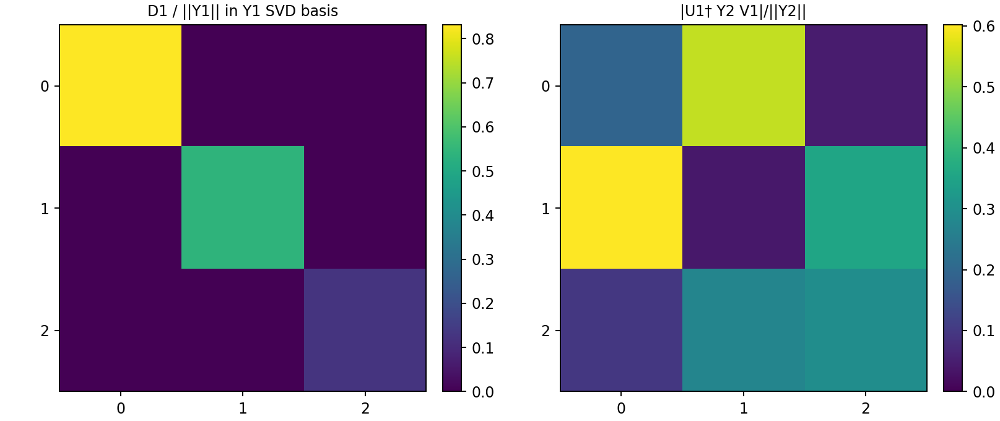
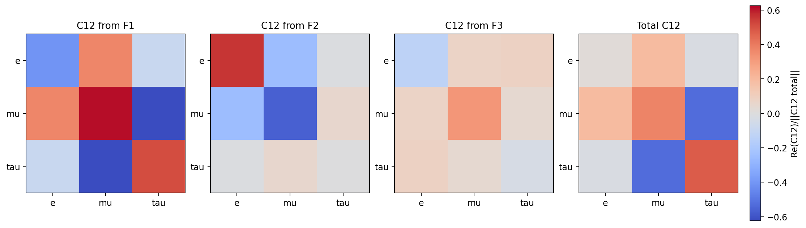
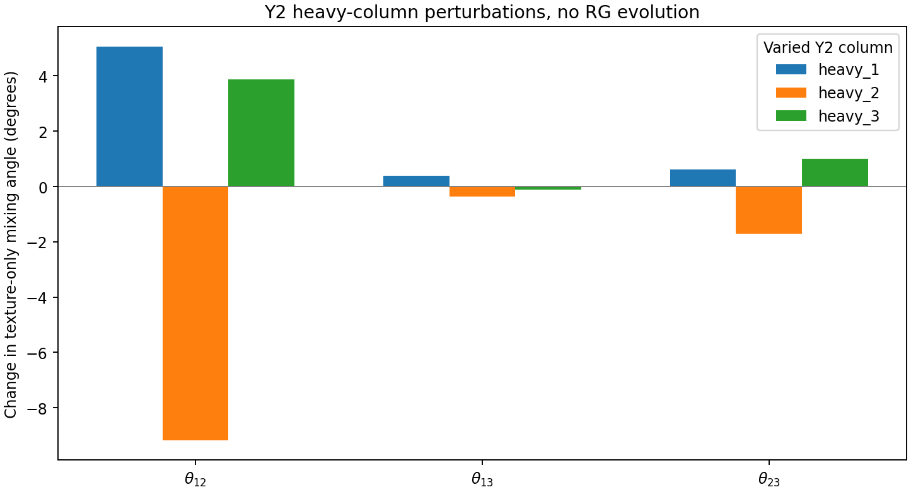

Read-only; no UV/EFT running or fitting. Input couplings are interpreted at the fermion matching threshold, even if their source configuration was historically a UV-start fitted reference. The texture-only angles below are not new low-energy predictions.
Input: /mnt/data/t3b_yukawa_next_package/output/studies/t3b_yukawa_basis/example_fitted_reference/source_excerpt/t3b_fitted_reference_minimal.json; λT3=0.1, heavy masses (GeV): 100000, 110000, 120000
| ||Y2|| / ||Y1|| | 0.777484 |
| ||offdiag(U1†Y2V1)|| / ||Y2|| | 0.935077 |
| Y2 residual to best scalar multiple of Y1 | 0.975744 |
SVD is a mathematical comparison, not a basis where both charged leptons and Majorana heavy masses remain diagonal.

| State | ||C12(r)|| / ||C12|| | Texture change after +10% Y2 column |
|---|---|---|
| F1 | 1.36567 | 0.04467 |
| F2 | 0.87167 | 0.08232 |
| F3 | 0.39018 | 0.03775 |
Sum of component norms / norm of sum: 2.62752. Values above one for individual contributions signify cancellations among heavy states.

Baseline texture angles (degrees): θ12=34.1872; θ13=8.7574; θ23=43.2323.
All cases are generated by algebraically changing the indicated Yukawa entries while keeping the heavy masses and charged-lepton basis fixed. The global +10% Y2 direction preserves C12's texture exactly, while column-specific changes do not.
| Y2 variation | Δθ12 (deg) | Δθ13 (deg) | Δθ23 (deg) |
|---|---|---|---|
| heavy_1 | +5.0697 | +0.3961 | +0.6241 |
| heavy_2 | -9.1780 | -0.3577 | -1.6986 |
| heavy_3 | +3.8845 | -0.1074 | +1.0017 |
| global_y2 | +0.0000 | +0.0000 | +0.0000 |

These are diagnostic leading C12 texture angles, not PMNS observables after scalar matching and Weinberg running. The upstream coupled C12-C5 flow is not used here.